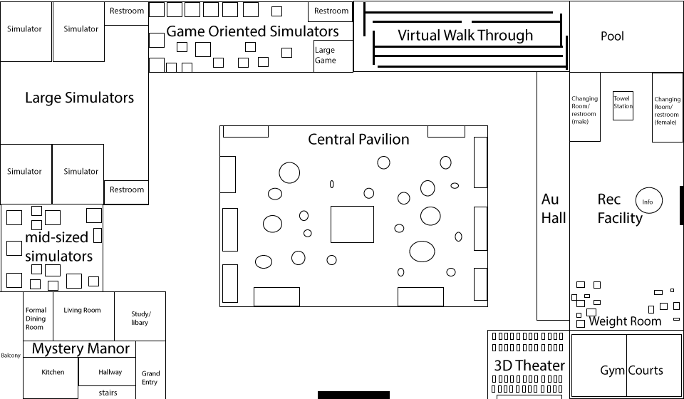

Welcome to Virtual Terra
Experience the infinite possibilities of a place made from dreams. Virtual Terra showcases the best of Virtual Reality and Augmented reality in conjunction with advanced robotics and mechanics. SO where does the name come from? It's derrived from the latin pre-fix of Terra, for earth. In technology a, Tera is metric unit that denotes the multiplication of 1012 power.
Business Plan
Main Park One Day Admission
| Admission Type | High Price End | Low Price End |
| One Day General Admission (no gym, Augment Reality House or Virtual walk through) | $50 | $30 |
| Admission: Augmented Reality House (one day) | $15 | $10 |
| Admission: Virtual Walk Through (one day) | $15 | $10 |
| Augmented Reality House & Virtual Walk Through pass (one day) | $20 | $28 |
| Admission Type | High Price End | Low Price End |
| Initiation fee | $50 | $60 |
| Adult (Monthly Membership) | $40 | $25 |
| Senior 65+ (Monthly Membership) | $30 | $15 |
| Children 12-17 (Monthly Membership) | $30 | $15 |
| Children 11 and under (Day-Pool Pass) | $15 | $5 |
| College discount (Monthly Membership) | $35 | $20 |
| Day Adult-Pool Pass | $18 | $10 |
*No children under 12 are permitted on machines without adult supervison.
Revenue Sources
Main Park
- Food Court Purchases
- Novelty Merchandise Sales
- Skip the line pass
- Experience enhancing App
- Parking Fee
Recreation Facility
- Towel rental
- Athletic Merchandise Sales
- Refreshments and Snacks
- Experience enhancing App
- Parking Fee
Main Park
- Food Court Purchases
- Novelty Merchandise Sales
- Skip the line pass
- Experience enhancing App
- Parking Fee
Recreation Facility
- Towel rental
- Athletic Merchandise Sales
- Refreshments and Snacks
- Experience enhancing App
- Parking Fee
First Floor
Second Floor

Major Attraction Concepts

Do you think that you are the next Sherlock Holmes? Or have you ever wanted to star in your own crime adventure mystery? Then Mystery Manor is the attraction for you! In the early 1900's a widow lived in this manor but was murdered! She is said to still haunt the premises, but she it not alone! The spirits of her husband, house keeper, stable boy and various other spirits are said to linger at the manor. Using your toolkit (Mobile App) you will solve the mystery! Take finger prints, scan for blood, discover hidden secrets and talk to the dead. Beware the Mystery Manor secrets run deep!
-Visitors will use web enabled smart devices with camera capabilities to view clues and explore new areas of the Mystery Manor. They will have the option to use their own or rented device. On personal devices users will have to download Virtual Tera's augmented reality application. On rented devices the augmented reality app will come preinstalled. The app turns the user's device into a virtual crime kit and paranormal tracking device. Visitors will explore Mystery Manor and by hovering their device over suspicious items unlock new content and clues. When the users unlock and solve a certain amount of clues new rooms will be open to them. Rooms know which visitors to permit because the app will send out a signal either via wifi signal or RF tag reader that tells the doors to open.
Requirements: Device with internet capabilities, wi-fi connection, and camera. Must run on standard operating system that meets modern technology specs. Source: Best Buy An App designed for the augmented reality house:Gravity Jack Marxent Labs.

Become lost in the mind bending world of the maze. Each part of the maze deals with alien landscapes such as the Moon, Mars, Saturn and Neptune. Experience environments quite unlike our own.
-This attraction is a cross between an art installation, planetarium and a maze. It requires visitors to wear 3D glasses to view the 3D world. 3D projectors will be used to create the projections on the walls and visitors will follow along a path as they experience other worldly environments.
Requirements: Short Throw Projector Short Throw Projectors and Cave Technology World Viz.

Tired of jogging on a treadmill? Bored of staring at a wall while doing the elliptical? Then try the interact room! The Interact Room allows you to do cardio exercise through dancing, kickboxing, and various games. Unlike a standard gaming console in your living room, this room is an immersive experience that is tailored to tracking your body movements. It provides an array of fun environments (Beach, Night Club, Pool, city, etc.) to choose from. It also provides games that allow you to kick, smash and hit targets.
Requirements: Short Throw Projector Short Throw Projectors Cave Technology World Viz.
Example: Interactive Forest Example YouTube.

Learn Yoga or Pilates from a virtual instructor or pick from a plethora of relaxing environments to meditate in.
-This room will use "short throw projectors" to display content on the walls. Multiple tracking devices such as the Kinect will be used to follow users' movements. A computer will keep track of the content being shown on the screen.
Simulation Bike

Do you feel like you are "spinning" on a road to nowhere? Well try, the simulation bike! This bike puts the rider in the front seat to an awesome ride! Riders can star in their own adventure movie where they out ride the bad guys, aliens, zombies and monsters, oh my! Or riders can chose from a relaxed scenic bike ride through some of the most tranquil parks and neighborhoods in the world.
-Sensors detect when the user's pedal speed increases via an accelerometer. This sends a signal to the computer to increase the speed in the simulation. In addition, the bike can react to the simulation by tilting the platform based on curves in the simulations and inclines on the hills.
Required Technology: a Motion Platform CKAS, Accelerometer CTC Online.
Example Bike Simulator
Bike Training Simulator
BMI Gaming
CKAS
HASHSLUSH